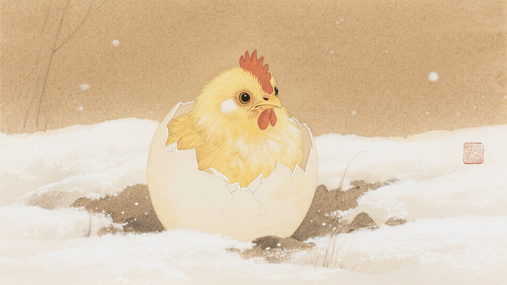
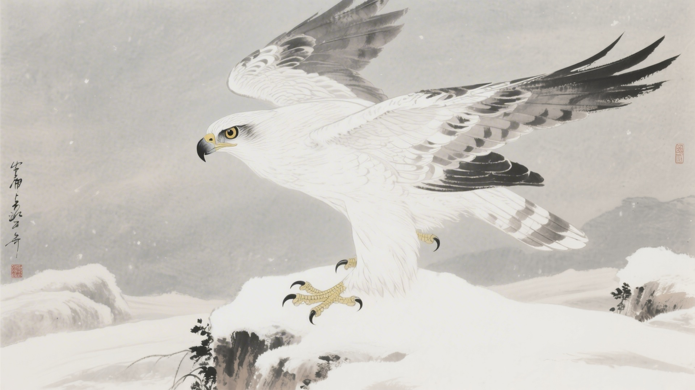
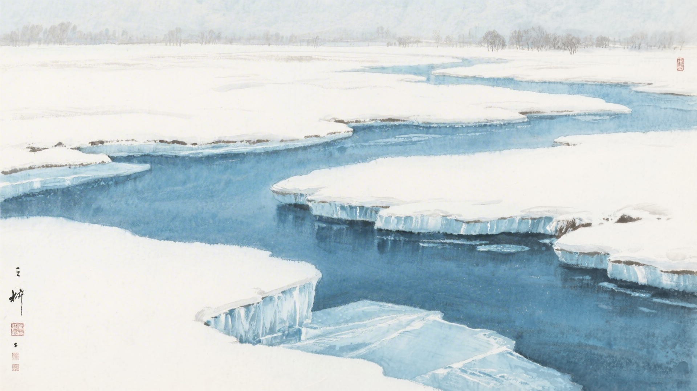
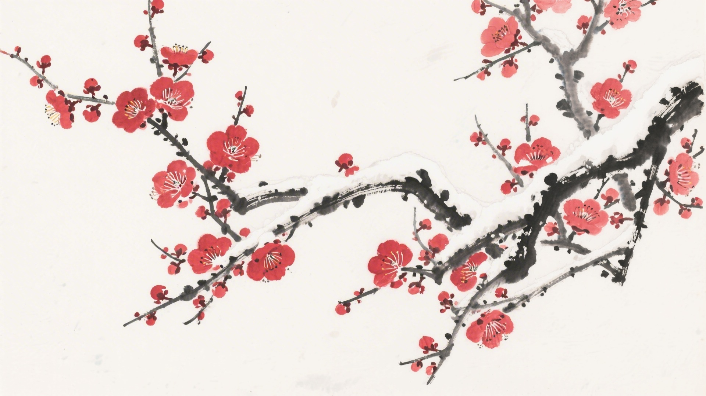
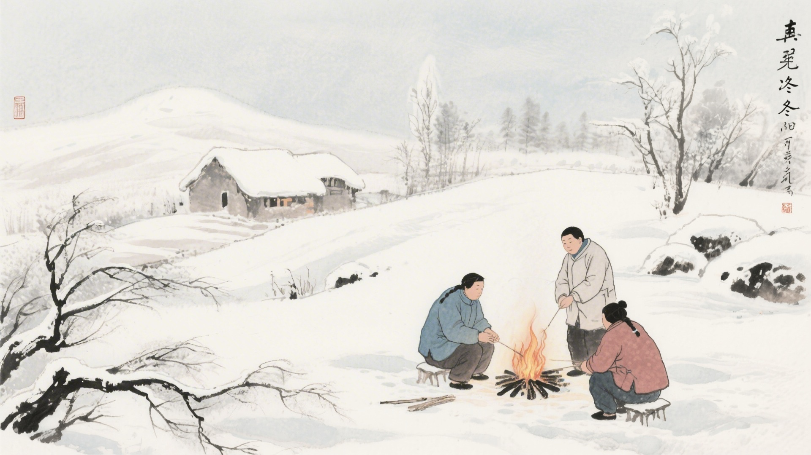

《中国传统色：故宫里的色彩美学》一书中为什么把下面这些颜色归入大寒节气？
紫府、地血、芥拾紫、油紫
骨缥、青白玉、绿豆褐、冥色
肉红、珠子褐、鹰背褐、麝香褐
石英、银褐、烟红、紫诰
大寒时节，母鸡开始孵蛋，老鹰飞速捕猎，河水冻得结结实实。古人说大寒有三候：鸡乳，征鸟厉疾，水泽腹坚。这十六种颜色，便从这三候里来。
大寒的"大"，是冷到了极致。这是一年中最冷的时候，冷到骨子里，冷到心里。颜色也冷到极点，淡的更淡，深的更深，像是世界都冻结了。
对应：大寒节气一候"鸡乳"的起、承、转、合四色。
色彩意象：母鸡孵蛋，生命萌发。
从淡紫到深紫，是寒冬里酝酿的生机，也是大寒时节最轻柔的过渡。

对应：大寒节气二候"征鸟厉疾"的起、承、转、合四色。
色彩意象：老鹰疾飞，寒气凛冽。
从淡青到深黑，是寒冬天空和大地交织的颜色，也是大寒时节最深沉的底色。

对应：大寒节气三候"水泽腹坚"的起、承、转、合四色（其一）。
色彩意象：河水冻透，万物蛰伏。
从淡红到暗褐，是寒冬里最温暖的一点点颜色，也是大寒时节最清冷的画面。

对应：大寒节气三候"水泽腹坚"的起、承、转、合四色（其二）。
色彩意象：冬尽春来，轮回将始。
从灰白到深紫，是冬天即将结束、春天即将到来的颜色，也是大寒时节最内敛的画面。

大寒这天，是一年中最冷的时候。河水冻透了，土冻透了，人的心也冻透了。颜色也冻透了，白的是冰，灰的是天，紫的是黄昏。它们挤在一起，等着过年。

颜色也懂得轮回。它们知道，大寒一过，就是立春。冬天到了尽头，春天就开始了。颜色从白开始，经历红黄青紫，最后又回到白。一年一个轮回，周而复始，永不停止。
（以上解读不代表原书观点）